|
"Granja de Micro-Robots”. Isla Cristina. Huelva. Abril 2006 |
|
|

· Título: “Granja de Micro-Robots”
· Duración: 50 minutos de conferencia-show + 1h de demostraciones, donde la gente viene y ve los robots de cerca
· Evento: Enred@ encuentro informático de jóvenes on-line.
· Organización de la party: Ayto. Isla Cristina (Área de Juventud) y Asociación WI-FInite Online
· Organización de la conferencia-show: Esta charla es parte de las actividades organizadas por Quark Robotics
· Lugar: Pabellón de deportes. Avda. Parque s/n. Isla Cristina. Huelva.
· Fecha: 14 de Abril de 2007
· Ponentes:
o Andrés Prieto-Moreno (Ifara Tecnologías)
o Ricardo Gómez (Ifara Tecnologías)
· Robots enseñados: Skybot, Goliat, Clónico, Sheila, Benita, PuchoBot, y Joshua.
Resumen
El objetivo de esta
charla-show es despertar el interés por la robótica entre los asistentes y
hacerles ver que es un mundo divertido, apasionante y sencillo. Cualquiera
puede construir su primer robot. Sólo se necesitan ganas. Para ello se comienza
mostrando el robot más sencillo, el “hola mundo” de la
robótica. Se llama Skybot y es el que utilizamos en nuestros talleres de
iniciación. Es un robot abierto. Toda la información está disponible bajo una
licencia libre: planos, electrónica y software. Se continúa con el Clonico,
un versión del Skybot con una estructura mecánica mejorada y propulsión por
orugas en vez de ruedas.
A continuación nos centramos en los robots articulados, que tienen una mecánica un poco más compleja y en los que aparece el problema de la coordinación. ¿Cómo coordinar las diferentes articulaciones para conseguir que el robot se mueva?. Como primer ejemplo se muestra a Sheila, un robot articulado con 6 patas y controlado por tres motores, es uno de los robots “hola-mundo” del tipo articulado. El siguiente es Benita, La hormiga cocodrilo, un robot con 6 patas y 12 motores que se mueve siguiendo la luz que recibe por las antenas. El siguiente es PuchoBot, un robot cuadrúpedo que tiene 12 articulaciones, y que puede moverse de manera autónoma o controlado a través del PC.
Finalmente, se hace una demostración del robot de exploración Joshua. Se telecontrola desde el PC y dispone de una cámara inalámbrica que envía las imágenes al operador. Manejarlo es como jugar al doom pero en directo ;-)
Licencia
|
|
Download
|
Transparencias de la presentación |
|
Presentación en PDF |
Información adicional
· Robot "Hola Mundo" SkyBot
· Robot PuchoBot
· Robot Hexápodo Sheila
Cuaderno de Bitácora
A
las 9 de la mañana del sábado 14 de Abril salimos Ricardo y yo desde Ifara Tecnologías. Por delante nos quedaban casi
|
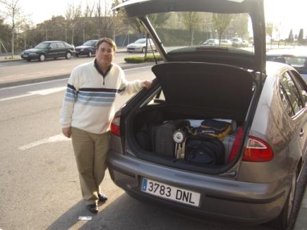 |
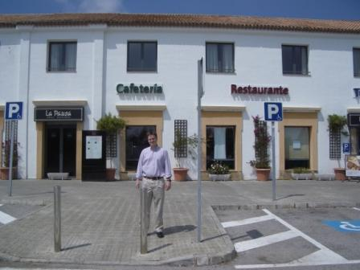 |
Al
llegar a Isla Cristina fuimos al hotel a registrarnos y como nos quedaba un
poco de tiempo nos sentamos en la terraza de la habitación a observar las
estupendas vistas de la playa. A las 18:00 nos fuimos al Pabellón Deportivo
para preparar la conferencia.
|
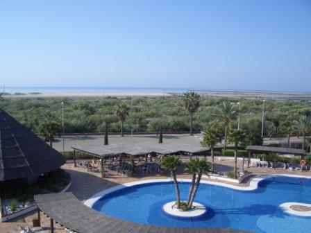 |
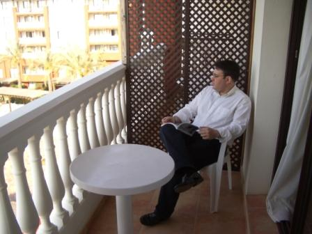 |
|
|
|
El
ambiente de la Party era muy bueno, nos recibieron estupendamente y se volcaron
completamente para preparar todo lo necesario para la conferencia. Antes
pudimos asistir a una demostración de AirSoft. Fue divertida y
aproveché para sacarme un par de fotos con Javier perfectamente vestido para el juego.
|
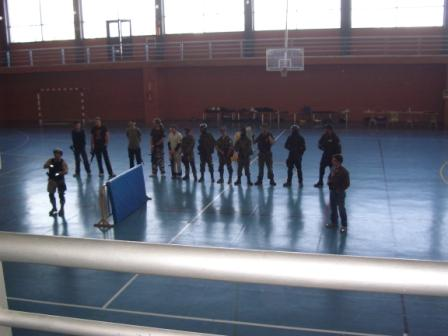 |
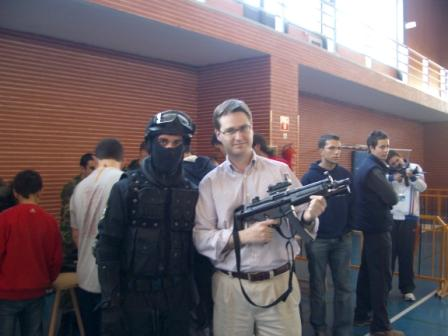 |
Después
nos dirigimos a la zona donde dimos la charla-show y empezamos a hacer el
despliegue de los robots. En la foto de la izquierda estoy preparado para empezar
la conferencia. A la derecha se ve a Ricardo en un momento de la charla
sujetando el robot clónico. En la foto además podéis ver el robot de LEGO
Goliat, uno de los primeros robots que construí hace ya más de 10 años!!! Como
pasa el tiempo.
|
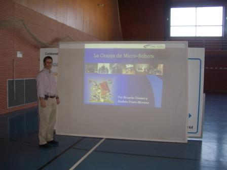 |
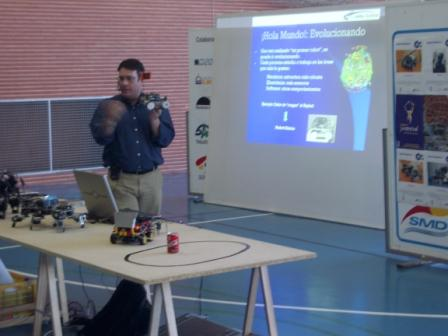 |
El público fue muy agradecido, más o menos fueron unas 20 personas, todas las que se encontraban en el pabellón a esa hora. La Party era para 100 personas, pero como en toda Party suelen aparecer por la noche. Entre el público había algún otro bebé, eso esta bien, enganchado a los niños a la robótica desde pequeñitos.
|
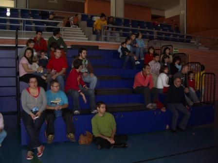 |
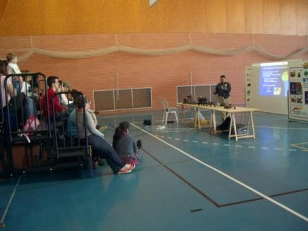 |
Al terminar la conferencia nos quedamos mostrando los robots y dejando que los más osados controlasen a Joshua con el mando de la Play. Finalmente nos despedimos de los organizadores Mauricio Fernández y Enrique Botello, y nos fuimos a conocer de noche Isla Cristina. De esto no hay fotos pero os lo podéis imaginar. Gente muy hospitalaria ;-)
A la mañana siguiente hicimos turismo visitando la zona del faro y las fabulosas playas. Aquí podéis ver un par de fotos, en la izquierda la calle principal de Isla Cristina y en la derecha una foto de los barcos pesqueros desde el paseo del faro.
|
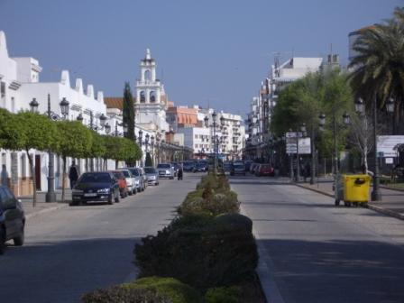 |
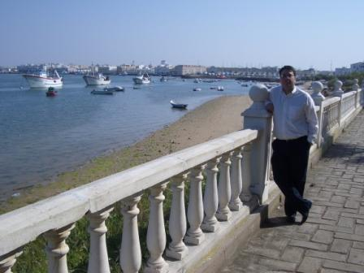 |
|
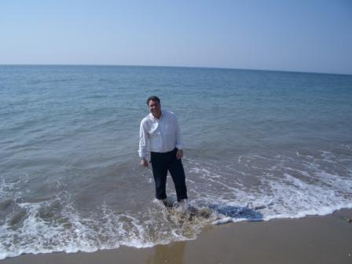 |
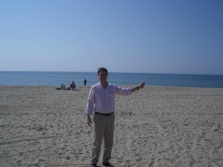 |
Arriba a la izquierda podemos ver a Ricardo paseando por el mar, no dudó en meterse con pantalones, pero creo que la próxima vez será mejor que lleve un bañador. Arriba a la derecha estoy yo comprobando la arena tan fina de las playas. Por lo menos para mí ya que yo estoy acostumbrado a las playas de piedras de la Herradura (Granada).
Luego emprendimos el viaje de regreso a Madrid, no sin antes parar en Córdoba para comer un buen Salmorejo y luego un paseo para bajar la comida visitando la Mezquita.
|
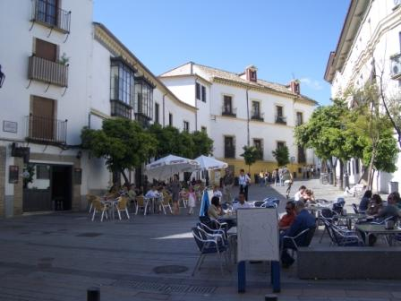 |
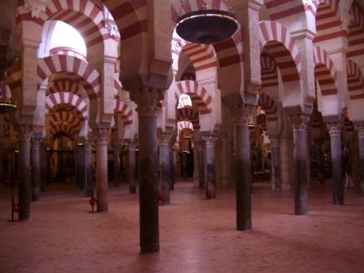 |
La siguiente parada Madrid, en el Colegio Mayor Antonio de Nebrija… pero eso será otra historia.